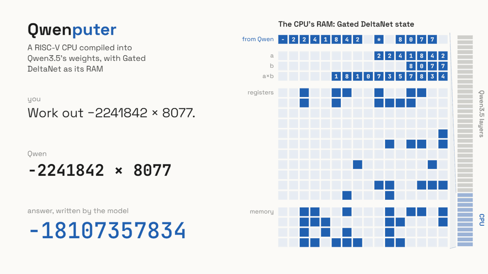

복잡한 계산을 정확히 수행할 수 있도록 AI 모델 자체에
CPU 기능을 추가한 AI 모델이 나왔다.
일반적으로 대형 언어 모델은 입력 문장의 다음 단어나 글자를
예측하여 응답을 생성한다.
이 때문에 큰 숫자를 곱하는 것과 같이 정밀한 계산이 필요한 상황에서는
잘못된 답이 나오는 경우가 많다.
일반적인 해결책은 AI가 파이썬 같은 외부 도구를 호출해
계산 결과를 가져오는 것이다.
이번에 공개된 모델은 이 문제를 해결하기 위해 외부 컴퓨팅 툴 대신
자체적인 CPU 기능을 AI 모델 자체에 통합한 게 특징이다.
CPU는 RISC-V라는 개방형 명령어 집합 아키텍처를 채택하며,
32비트 RV32IM과 일부 확장 명령어를 구현한다.
이로 인해 산술 연산뿐만 아니라 C 또는 마이크로파이썬으로
작성된 프로그램도 AI 모델 내에서 실행하는 게 가능하다.
이를 통해 해당 모델은 1800만번에 달하는 명령어 연속 처리에서
한번도 오류를 일으키지 않았다.
다만 문제점도 매우 명확하다.
아직 실험적인 기능이라 가상 CPU가 계산을 처리하는 속도가
다른 모델들에 비해 몇배에서 몇십배 더 걸린다는 점.
그래서 이 가상 CPU의 처리 속도를 높이는 게 다음 목표라고 한다.
또한 해당 모델은 현재 CPU 구현을 넘어 모델 자체적으로
파일을 저장하는 저장 장치 메커니즘도 구현할 예정.


거상 ㅇㄷ감